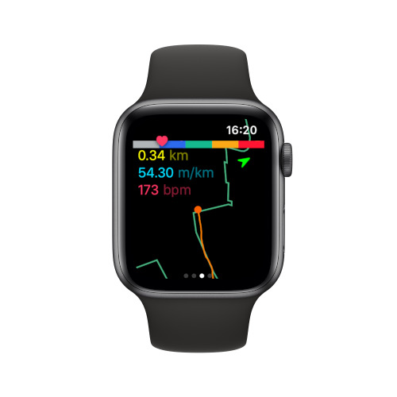
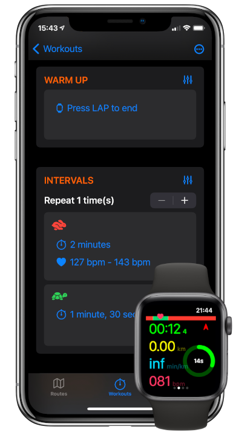
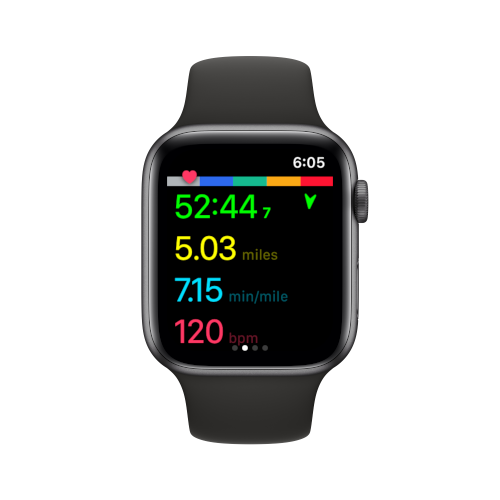

Basic GPS navigation
Load GPX files, follow the green path. No need to bring your phone, Whistle will help you follow the right trail and get you back home safe.
GPS accuracy is reflected by the color of the compass arrow.
The map rotates to always face your direction and the arrow shows the north.
Structured workouts made easy
Program your interval workouts on your phone.
Set target HR for any step. Whistle will notify you before each step through voice, haptics and visuals.


Spot the data you need
Color coded data fields, heading and GPS signal strenght, HR zones ...
Everything is clearly visible at a glance during your runs to help you stay in the zone.
Whistle is integrated with Apple Health so you can close your rings and find all your data in Fitness and Health apps on your phone.